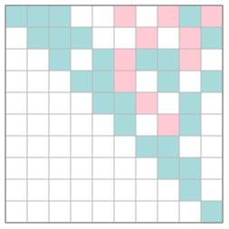
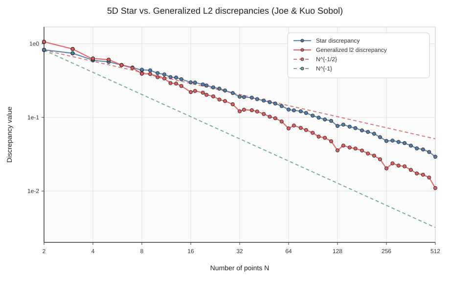

Overview
tms_lib works with generator matrices over finite fields. A digital sequence is represented by one square generator matrix per coordinate. The library can construct Pascal matrices, Sobol' matrices from arbitrary monic polynomials and initialization blocks, Sobol'-derived hardcoded tables, tensor products, point coordinates, rank tests, t-value curves, exact or practical discrepancy estimates, Owen scrambling and SVG diagnostics.
Use
Field<p,r> or aliases such as GF2, GF3, GF4, GF8. Prime fields use raw integers; non-prime fields use table-backed GF_ext<p,r>.Matrix<F> owns memory; MatrixView<F> is a non-owning view. Most routines accept views to avoid copies.The code exposes both construction and diagnostics: rank, determinant-prefix tests, t-values, point-set t-values, generalized L2 discrepancy and star discrepancy.
Mental model
A digital point is produced by decomposing the point index i into base q = p^r digits, multiplying this digit vector by a generator matrix over GF(q), and interpreting the output digits as a number in [0,1). For an s-dimensional sequence, tms_lib stores s such matrices.
index i --base q digits--> a = (a0,a1,...)
coordinate j: C_j a over GF(q)
real coordinate: 0.y0 y1 y2 ... in base qSobol' matrices are generated from a monic recurrence polynomial
P(x) = x^e + poly[e-1] x^(e-1) + ... + poly[1] x + poly[0]where poly[k] stores the coefficient of x^k; the leading coefficient is implicit. Initial direction columns are supplied as an e × e upper-triangular block.
Quick start
1. Choose a field
typedef GF5 F; // GF(5), prime field
// or: typedef Field<2,3> F; // GF(8), extension field2. Build generator matrices
Matrix<F> Id(9, 9); Id.set_id();
const MatrixView<F>& P = PascalPowIntMatrix<F, 9, 1>::value();
const MatrixView<F>& P3 = PascalPowIntMatrix<F, 9, 3>::value();
std::vector<MatrixView<F>> sequence = { Id.view(), P, P3 };3. Test quality or generate points
bool progressive = is_t0_progressive(&sequence[0], int(sequence.size()));
std::vector<int> t = t_values_fast(&sequence[0], int(sequence.size()));
std::vector<double> pts = get_points<F>(&sequence[0], int(sequence.size()), 1000);Illustrated examples from main.cpp
The demo program constructs Pascal and Sobol' matrices, checks ranks and t-values, draws generator matrices and point sets, applies Owen scrambling, and plots star versus generalized L2 discrepancy.



API reference
This section documents the routines and classes exercised by main.cpp, plus their key assumptions, costs and thread-safety constraints.
Finite fields
| Symbol | Purpose and parameters | Assumptions / notes | Cost |
|---|---|---|---|
GFCardinality<p,r>::value | Compile-time cardinality p^r. | p must be prime for mathematical correctness; no runtime primality test. | compile-time |
GF_ext<p,r> | Storage wrapper for extension-field elements. The raw label is .v. | Arithmetic is table-backed through global arrays add_non_prime, mul_non_prime, etc. Valid for fields covered by the tables, currently up to MAX_GF. | O(1) |
Field<p,r> | Field traits: T, zero(), one(), add, sub, mul, div, neg. | For r=1, T=int; for r>1, T=GF_ext<p,r>. | O(1) |
gf_reduce<p,r>(x) | Reduces a prime-field integer modulo p; identity for extension-field wrappers. | Call after prime-field integer arithmetic if values may be outside [0,p). | O(1) |
gf_from_int<p,r>(x) | Injects an integer into the prime subfield. | For raw GF(q) labels in extension fields, use T{label} instead of prime-subfield injection. | O(1) |
gf_to_raw_index<F>(x) | Maps a field element to the digit label used when converting to real coordinates. | Returns x for prime fields and x.v for extension fields. | O(1) |
Matrices and views
| Symbol | Parameters and behavior | Assumptions / ownership | Cost |
|---|---|---|---|
MatrixView<F> | Non-owning view: values, m, n. Supports indexing and inherits MatrixBase helpers. | The pointed memory must outlive the view. Pass by value is cheap. | O(1) storage |
Matrix<F> | Owning row-major dense matrix. Constructors: empty, size, from view, initializer list. Copy is deleted; move is supported. | Initializer-list integers are injected with gf_from_int. Use view() to pass to algorithms. | O(mn) memory |
MatrixBase::set_zero(), set_id() | Fill matrix with zeros or identity. | set_id() assumes a square or at least sufficiently allocated row-major matrix; it uses cols() for stride. | O(mn) |
operator* | Dense matrix product over F. | Dimensions must match. Intermediate values are reduced into the field. | O(mnk) |
MatrixBase::rank() | Rank via Gaussian elimination with row and column pivoting. | Robust for arbitrary dense matrices. Overload accepting tmpPivoted avoids allocation. | O(min(m,n)·mn); memory O(mn) unless workspace supplied. |
MatrixBase::get_inverse() | Inverse of a square matrix. | The optimized workspace version assumes the pivot pattern used by the determinant-update code; for arbitrary matrices prefer rank if only singularity is needed. | About O(n^3); memory O(n^2). |
MatrixBase::checkDet() | Tests leading anchored square subdeterminants and returns first failing row, or -1 if all tested prefixes are nonsingular. | Specialized to matrices where no pivoting is needed, typical of Sobol-type triangular/combined matrices. Not a general determinant test: anti-diagonal matrices are a counterexample. | Closed forms up to small sizes, then update formulas; roughly O(n^3) worst-case, low constants. Workspace overload avoids allocations. |
MatrixBase::save_svg() | Writes an SVG grid rendering of the matrix. | File-system operation; values are mapped to a small pastel palette. | O(mn) |
Pascal, tensor products and Sobol' matrices
| Symbol | Parameters and behavior | Assumptions | Cost |
|---|---|---|---|
pascal_pow_int<p,r>(mat,n,power) | Fills an n×n Pascal translation/power matrix using an integer power injected into the field. | mat must point to n*n entries. | O(n²) |
pascal_pow_field<p,r>(mat,n,power) | Same construction but power is already a field element. This is the version used for polynomial translation f(x+a). | Use for extension-field labels such as GF4 element 3. | O(n²) |
PascalPowIntMatrix<F,N,Power>::value() | Compile-time cached Pascal matrix. | Uses a function-local static buffer. First call initializes it. | First call O(N²); later O(1). |
PascalTranslateFieldMatrix<F,N,Power>::value() | Compile-time cached field-translation Pascal matrix. | Same static-buffer caveat. | First call O(N²); later O(1). |
tensor_product(A,B,result[,rows,cols]) | Kronecker/tensor product, optionally truncated to a top-left block. | result must have sufficient storage. Truncated mode avoids computing unused blocks. | Full O(Am·An·Bm·Bn); truncated proportional to requested block size. |
SobolMatrix<F>(n,poly,init) | Constructs an n×n Sobol generator matrix from a monic recurrence polynomial and initial columns. | poly stores lower coefficients only; init is an e×e initial block. The leading coefficient is implicit. | O(n²e) approximately; memory O(n²). |
SobolMatrix<F>(table,dim,n) | Constructs a Sobol-type matrix from a predefined table. | Table base must match F: GF(2) tables with GF2, QuadQuad with GF3. | Same as Sobol construction plus table lookup. |
SobolPredefinedTable | Available families: SOBOL_JOE_KUO_GF2, SOBOL_ONETWO_SEQ_GF2, SOBOL_FAURE_LEMIEUX_IS_DEC_GF2, SOBOL_QUADQUAD_GF3. | Dimension numbering follows the source tables. Faure–Lemieux includes the identity convention from its implementation. | O(#table entries) lookup unless indexed externally. |
Digital-net tests and t-values
| Symbol | Parameters and behavior | Assumptions | Cost |
|---|---|---|---|
combine_matrices(matrices,row_choices,num_matrices,max_columns,result) | Builds the square matrix obtained by stacking the first row_choices[i] rows of each generator matrix. | sum(row_choices) should match the number of rows needed in result. The routine copies full rows of length max_columns. | O(m·max_columns), where m=sum row_choices. |
is_t0_progressive(matrices,dim) | Tests whether all relevant progressive leading-row combinations have full rank / nonzero determinant for t=0. | Designed for square generator matrices of the same size and same field. Internally relies on finite-field matrix tests. | Number of compositions times determinant/rank test. For matrix size m and dimension s, compositions are C(m+s-1,s-1). |
t_values(matrices,dim) | Naive t-value curve: returns t(m) over increasing net sizes. | Exact but combinatorial; useful for validation and small sizes. | Roughly Σ_m C(m+s-1,s-1) · rank/det-cost. |
t_values_fast(matrices,dim) | Faster t-value computation following the Marion–Godin–L'Ecuyer idea of avoiding repeated full tests. | Same mathematical result as the naive routine; should be preferred for nontrivial dimensions. | Still combinatorial in the number of row compositions, but with substantially lower incremental cost and memory reuse. |
t_value_pointset(points,npts,dim,base,dbg) | Computes a t-value directly from a finite point set by checking elementary intervals. | Points should lie in [0,1) and be compatible with a base-base digital structure. Intended for validating generated or scrambled point sets. | Depends on interval enumeration; practical for small/moderate m=log_base(npts). |
Point generation, scrambling and discrepancy
| Symbol | Parameters and behavior | Assumptions | Cost |
|---|---|---|---|
MatrixBase::get_point_coordinates(nb_points,coords,stride) | Generates one coordinate from one generator matrix. | Matrix width determines the number of base-q digits. If more points are requested than the matrix can represent, the function prints a warning. | O(nb_points · n²) with current dense matrix-vector multiplication; memory O(n) temporaries. |
get_points<F>(matrices,dim,npts) | Generates an interleaved array of npts*dim real coordinates. | All matrices must be valid views over the same field and sufficient digit width. | O(dim · npts · n²); memory O(dim·npts). |
draw_2D_points(M1,M2,nb_points,svg_filename) | Exports a quick SVG scatterplot from two generator matrices. | Uses get_point_coordinates internally. | O(nb_points · n²). |
make_random_owen_tree_nd(dim,base,depth,seed) | Creates a randomized nested Owen permutation tree. | Depth should cover the number of digits later permuted. | Memory roughly proportional to the number of stored tree nodes; exponential in depth in the worst case if fully expanded. |
apply_owen_permutation_real(in,out,npts,dim,m,tree) | Applies nested Owen scrambling to real-valued points. | Input and output buffers must have npts*dim doubles. Deterministic for a fixed tree. | O(npts·dim·m). |
padd_least_significant_digits(pts,n_pts,dim,base,m,seed) | Adds randomized least-significant digits after finite-depth scrambling, useful for plotting or discrepancy estimates. | Mutates pts in place. | O(n_pts·dim). |
generalized_l2_discrepancy(points,npts,dim,block_size) | Generalized L2 discrepancy of an arbitrary point set. | Input layout is interleaved: point i, dimension j at points[i*dim+j]. Block size tunes cache behavior. | Dominated by the pairwise term: O(npts²·dim); memory O(1) beyond blocks. |
star_discrepancy(points,npts,dim) | Exact star discrepancy for small dimensions by enumerating candidate boxes. | Useful for validation and low-dimensional demos; combinatorial explosion in high dimension. | Approximately O(npts^dim · npts · dim) in the brute-force view; practical only for modest dim and npts. |
Enumeration and plotting
| Symbol | Parameters and behavior | Assumptions | Cost |
|---|---|---|---|
MatrixRange<F> | Enumerates matrices bounded entrywise by min_matrix and max_matrix, with deterministic, globally randomized or DFS-value-permuted traversal modes. | Designed for constrained searches; fixed entries have identical min/max bounds. Iterator views refer to internal buffers. | Size is product of per-entry admissible values. Decoding one step is O(mn). |
DiscrepancyCurve | Curve data: n_points, values, label, style, point visibility. | Used only by SVG plotting. | O(#samples) storage. |
ReferenceCurveSpec | Reference power law such as N^{-1/2} or N^{-1}, with color and dashed style. | If scale is omitted/nonpositive, plotting can auto-normalize to the first data value. | O(1) |
DiscrepancyPlotOptions | SVG plot configuration: title, axis labels, log/linear y-axis, dimensions, margins, legend, ticks and palette. | Plain data structure; no ownership of curves. | O(1) |
plot_discrepancy_curves_svg(curves,refs,opt,filename) | Writes a publication-style SVG plot for discrepancy curves. | Input vectors must have matching n_points and values lengths. Returns false on file failure. | O(total samples + refs·samples). |
Complexity notes
Discrepancy
generalized_l2_discrepancy is quadratic in the number of points and linear in dimension, because of its pairwise product term. It is therefore a good smooth diagnostic but not a large-scale online metric. star_discrepancy is much more expensive: exact star discrepancy requires examining candidate anchored boxes and should be treated as a small-dimensional validation tool.
t-values and t=0 tests
The naive t-value computation enumerates row-compositions of generator matrices. At depth m in dimension s, the number of weak compositions is C(m+s-1,s-1). The faster routine reduces repeated algebraic work but does not remove the underlying combinatorial nature.
Rank and determinant tests
rank() is general-purpose Gaussian elimination with pivoting. checkDet() is a targeted determinant-prefix test for matrices that behave like Sobol row-stacks; it is not a general substitute for rank.
Memory
Most matrix routines are dense and row-major. Prefer overloads accepting temporary workspaces inside large searches to avoid repeated new[]/delete[]. Generated point sets are stored as interleaved double arrays of size npts*dim.
Thread safety
| Component | Thread-safety status | Recommendation |
|---|---|---|
Matrix<F> / MatrixView<F> | Read-only concurrent access is safe if the underlying storage is not mutated. Writes through shared views are not synchronized. | Use per-thread matrices or explicitly synchronize writes. |
| Global finite-field tables | They are global read-only lookup tables after initialization. | Do not mutate them after worker threads start. |
PascalPowIntMatrix::value() / PascalTranslateFieldMatrix::value() | Use function-local static buffers initialized on first call. C++11 guarantees thread-safe initialization, but the returned view points to shared mutable storage. | Treat returned matrices as read-only. If code may write, copy into a local Matrix. |
| Workspace overloads | Thread-safe when each thread supplies its own workspace. | Never share tmpMatT, tmpInv, etc. across concurrent calls. |
MatrixRange iterator | Iterator state is mutable. decode_step() into a thread-local matrix is suitable for OpenMP-style parallel loops. | Use one local Matrix per thread, as in main.cpp. |
| SVG output | File writes are not synchronized. | Use distinct filenames per thread or external synchronization. |
Common gotchas
gf_from_int injects into the prime subfield. For extension-field digit labels, use T{label} only if the label is already in the library's GF(q) representation.poly[].checkDet() assumes a no-pivot determinant path. It is fast for the intended row-stack tests, but rank() is the robust general-purpose test.MatrixView is only valid as long as the underlying Matrix or static buffer remains alive.References and data sources
- I. M. Sobol', On the distribution of points in a cube and the approximate evaluation of integrals, USSR Computational Mathematics and Mathematical Physics, 1967.
- S. Joe and F. Y. Kuo, Remark on Algorithm 659: Implementing Sobol's quasirandom sequence generator, ACM Transactions on Mathematical Software, 2003. DOI.
- S. Joe and F. Y. Kuo, Constructing Sobol sequences with better two-dimensional projections, SIAM Journal on Scientific Computing, 2008. DOI. Tables: UNSW Sobol' direction numbers.
- H. Faure and C. Lemieux, Sobol'-type implementations and IS-dec tables, as used in the library. See also the implementation reference provided by the author: arXiv:1910.04084.
- N. Bonneel, OneTwo sequence, Sobol'-based binary sequences with t=1 behavior on selected 2D projections. paper.
- N. Bonneel, QuadQuad sequence, base-3 Sobol'-type quadruplets with optimized properties. paper.
- P. Marion, P. Godin and P. L'Ecuyer, efficient computation of t-values for digital nets and sequences. Journal of Computational and Applied Mathematics.
Appendix: output from the demo program
The full console output is intentionally not embedded in the main flow; it is mostly useful for regression checks of matrices, rank/t-value routines and SVG generation. Keep it as a separate artifact or paste it into a test log.